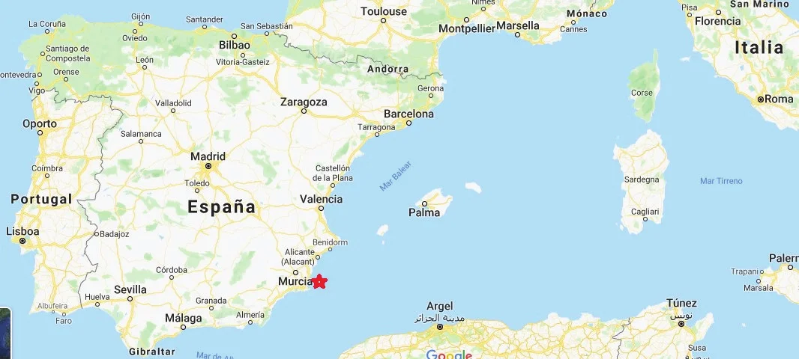
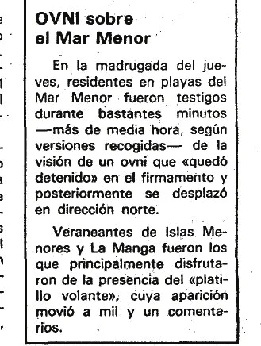
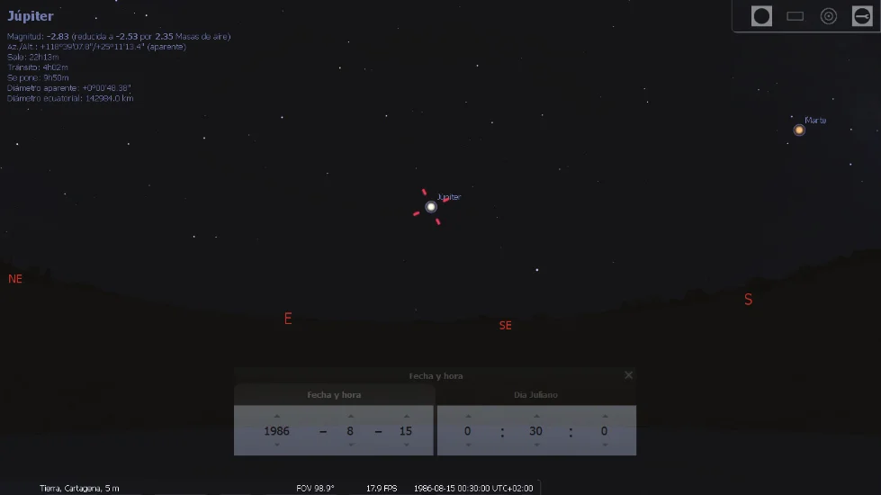
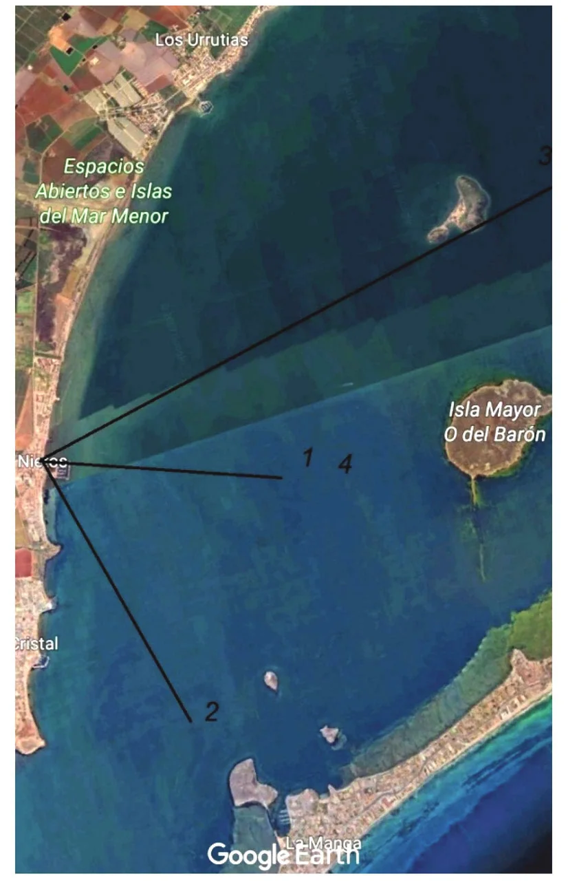
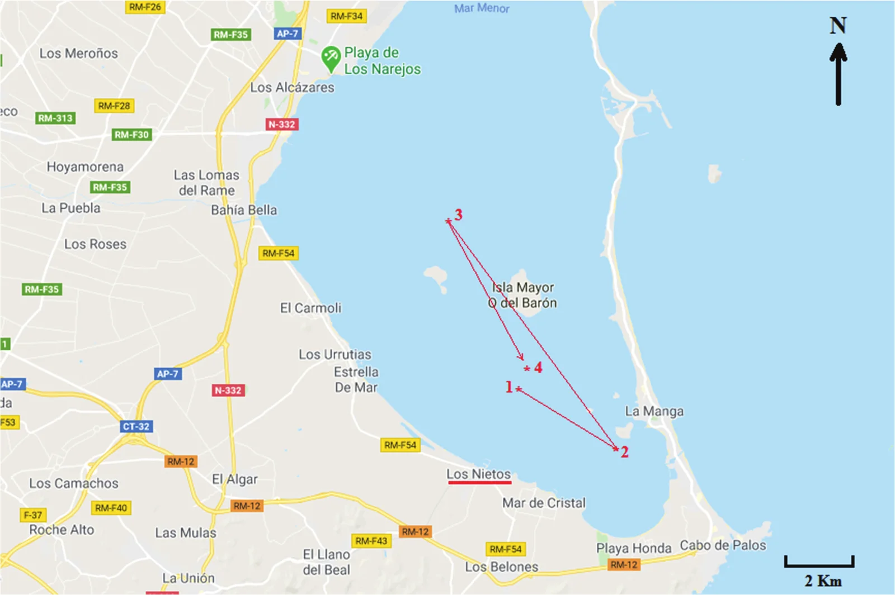
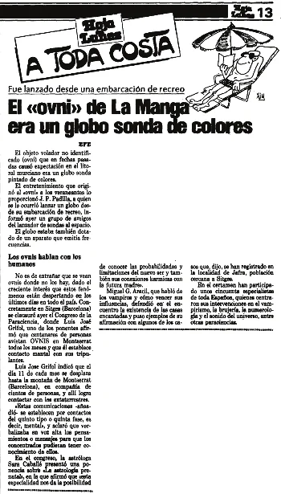

L'événement étudié semble de nature exceptionnelle. D'abord indéfini pour le témoin, il a ensuite été présenté comme correspondant à une observation d'ovni plus que modeste, survenue au milieu de l'été espagnol et restée inexpliquée faute d'information. Les entretiens téléphoniques et par courriel menés avec le témoin au fil des années ont révélé de nouvelles données étonnantes sur l'observation. Une recherche dans la presse a apporté une solution inattendue à une partie du récit du témoin. L'analyse du récit suggère que l'événement est compatible avec un épisode de faux souvenir.
Les affirmations extraordinaires se révèlent généralement être l'une de trois choses très différentes, selon l'approche, les croyances et la culture scientifique de celui qui les examine : la preuve d'un phénomène ovni inexplicable et intelligent ; un exemple d'invention malveillante ; ou une déformation des faits par un narrateur de bonne foi. Une grande partie du soutien au mythe de l'ovni extraterrestre repose sur l'ignorance, la crédulité ou l'incompétence de l'ufologue de service, souvent incapable de filtrer de façon critique les aventures qu'on lui raconte, et qui les rapporte ensuite comme authentiques. Les faits ne sont pas corroborés en répétant les affirmations des autres, quel que soit le nombre de photos des lieux et du sujet qui les accompagnent, comme le fait habituellement la presse à sensation.
Dans le cas présent, une personne qui affirme avoir été témoin d'un phénomène rapporté par un journal lui prête une série de caractéristiques très étranges et uniques. Faut-il la croire sur parole ? Nous n'avons que son témoignage personnel, bien qu'elle nous assure que deux membres de sa famille, des voisins et un grand nombre d'autres personnes y ont assisté. Mais nous n'avons aucune déclaration des autres témoins possibles, aucun indice sur leur identité, ni même aucune autre confirmation de ces événements remarquables.
Le but de cette publication est de fournir toutes les informations disponibles : la version « à haute étrangeté » fournie par ce prétendu observateur (qui manque de corroboration), l'événement publié auquel il relie sa prétendue expérience, et un phénomène authentique et documenté qui pourrait résoudre l'énigme. Elle soulève des questions qui se posent dans la plupart des récits d'ovnis les plus étranges à témoin unique : ces histoires sont-elles vraies ? Quelle position l'enquêteur doit-il adopter pendant l'enquête : croire aveuglément une histoire non confirmée et non prouvée, ou suivre une approche sceptique pour identifier une ontologie psychologique sous-jacente ? Sans aucun doute, la seconde est la tactique préférable, par pure logique et bon sens, dans le cadre de la connaissance scientifique.
Dans la nuit du , un message d'un certain « José A. Rubio » est arrivé dans ma boîte de réception, que je reproduis ici. J'ai ajouté entre crochets quelques précisions de mon cru et mis en gras certaines des informations les plus sensationnelles du récit.
Cher M. Ballester, ma question concerne un événement survenu il y a environ 20 ou 25 ans. Dernièrement, j'ai rencontré des témoins oculaires de ce phénomène comme moi, et nous avons échangé nos impressions, qui concordent dans tous les détails. Alors, après y avoir réfléchi, je vais approfondir un peu le sujet. L'incident s'est produit dans la région du Mar MenorLe Mar Menor est une lagune côtière d'eau salée située au sud-est de la Communauté autonome de Murcie, en Espagne, près de Carthagène. Avec une superficie de 135 km², 70 km de côtes et des eaux chaudes et claires d'au plus 7 m de profondeur, c'est la plus grande lagune d'Espagne. Elle est séparée de la Méditerranée par La Manga, un cordon sableux de 22 km de long dont la largeur varie de 100 à 1 200 m, le cap de Palos à son sommet sud-est donnant à la lagune sa forme à peu près triangulaire. vers minuit. Ma mère, un cousin germain et moi bavardions sur le balcon de la maison [village de Los Nietos, Murcie, Espagne] qui donne sur la plage, quand nous avons soudain vu un objet brillant descendre à grande vitesse des profondeurs du ciel étoilé, laissant une traînée lumineuse, jusqu'à s'arrêter au centre du Mar Menor à 10-50 m de l'eau. Il est resté dans cette position quelques minutes, ce qui nous a permis de l'observer attentivement. Il avait une forme sphéroïdale, mal définie à cause de la lumière qu'il dégageait ; la lumière qu'il émettait était surtout blanchâtre, mais sur les côtés il en émettait de bien d'autres teintes, notamment du vert, du bleu et du rouge. Sa taille approximative pouvait être de 20 à 30 m de diamètre et sa décélération pour atteindre le niveau de la mer depuis le ciel fut instantanée.
En voyant cela, nous avons été surpris et conscients que cet objet n'avait pas d'origine connue et que nous assistions à quelque chose d'extraordinaire, alors nous sommes montés sur le toit de l'immeuble pour avoir une vue panoramique de tout le Mar Menor. Au bout de quelques minutes, l'objet s'est déplacé vers le sud d'environ deux milles nautiques [3 700 m] à une telle vitesse qu'il l'a fait en une fraction de seconde, et avec une accélération et une décélération tout aussi instantanées. Il est resté immobile jusqu'à ce que nous voyions approcher une vedette de la Guardia CivilLa plus ancienne force de l'ordre d'Espagne : https://en.wikipedia.org/wiki/Civil_Guard_(Spain) ainsi qu'une autre que nous n'avons pas pu identifier. À environ 500 m, ils ont allumé les projecteurs des bateaux, qui ont éclairé l'objet, mais ils n'ont pas pu s'en approcher car il a entamé une manœuvre d'évitement.
Pendant ce temps, nous avons entendu deux avions de chasse (je crois que c'étaient des F-1) décoller de la base aérienne de San Javier [à ~18 km], sans pouvoir voir dans quelle direction ils partaient d'abord.
L'objet, qui avait entamé sa manœuvre d'évitement en s'éloignant des navires, s'est déplacé vers le nord d'environ cinq milles [9 300 m] à la même vitesse, pour atteindre le niveau de la mer tout près de San Javier. Il y est resté jusqu'à ce que les chasseurs-bombardiers le survolent quelques minutes plus tard, puis il est revenu au centre du Mar Menor, là où il s'était d'abord arrêté. Il n'y est resté que quelques secondes pendant que les avions revenaient, et il a finalement décollé avec la même accélération extraordinaire, puis a disparu dans le ciel en laissant une petite traînée jaunâtre dans les couches supérieures de l'atmosphère.
Le lendemain, comme il est logique, nous avons regardé le journal télévisé, mais rien n'en a été dit. Nous sommes allés acheter le journal, et l'événement y était décrit par les autorités comme un ballon-sonde tombé dans le Mar Menor. Quelques années plus tard, je suis entré dans la Marine ; j'ai moi-même lancé des ballons météorologiques et je peux donc les décrire en détail. Il n'y a plus eu d'autres nouvelles.
Voilà le récit complet de l'expérience. Avec les années, ma curiosité s'est estompée, mais des conversations récentes avec des témoins m'ont encouragé à m'y remettre. J'ai l'intention de consulter les archives du journal La Verdad pour retrouver la nouvelle, de confronter aussi les détails de l'observation avec les témoins, et de demander aux chercheurs en ovnis d'Espagne s'ils ont des données sur cette observation. Cela dit, merci de me faire savoir si vous avez des informations à ce sujet.
Le témoin insistait sur le fait qu'il s'agissait d'une observation à témoins multiples, faite cet été-là depuis les localités de La Manga, San Javier, Los Alcázares et Los Nietos (où se trouvaient l'observateur et sa famille).

En guise de validation, il m'a envoyé le fragment d'une conversation trouvée sur un forum Internet, datée du :
BONJOUR, J'HABITE À MAR DE CRISTAL [à 2,4 km à l'ESE de Los Nietos] ET IL Y A ENVIRON 20 ANS UN ENGIN DONT JE VOUS ASSURE QU'IL N'ÉTAIT PAS DE CETTE TERRE A ÉTÉ VU LONGTEMPS ET DEPUIS PLUSIEURS ENDROITS DE CETTE RÉSIDENCE, MÊME MES PARENTS QUI À CE MOMENT-LÀ N'ÉTAIENT PAS AVEC MOI MAIS À MAR DE CRISTAL ONT PU LE VOIR DE TRÈS PRÈS PRÈS DE LA SORTIE D'ISLAS MENORES, ILS M'ONT DIT EN RENTRANT QU'IL ÉTAIT POSÉ SUR LA MER À TRÈS PEU DE MÈTRES DU RIVAGE, ET TOUS CEUX QUI ÉTAIENT À MAR DE CRISTAL À CE MOMENT-LÀ PEUVENT LE CONFIRMER CAR PRATIQUEMENT TOUTE LA RÉSIDENCE L'A VU, TOUT LE MONDE ÉTAIT AU COURANT.
Il s'agit d'un témoignage anonyme qui parle d'un cas dans le Mar Menor vers ! Un autre lecteur du même forum disait avoir vu la même chose depuis Cabo de Palos (à 7,3 km à l'ESE de Los Nietos). Quand ? Par qui ? Mais mon informateur n'a « pas besoin de témoins fiables puisque je l'ai vu avec ma famille et que je m'en souviens parfaitement. J'ai même contacté 20 ou 30 voisins qui s'en souviennent. » Or la seule vérité, comme nous le verrons plus loin, est qu'en six ans d'échanges de courriels et d'appels téléphoniques, il n'a jamais pu donner ne serait-ce que le nom d'une seule autre personne concernée.
Dès le départ, le déclarant tient pour acquise la nature extraordinaire du phénomène et le classe comme d'origine inconnue. De fait, par sa façon de décrire les mouvements de l'objet, il lui prête une intention intelligente. Cela montre qu'il est clairement parvenu à une conclusion personnelle, bien qu'il consulte aussi des « experts » pour avoir leur avis.
Ma réaction à son premier courriel a été de lui demander de préciser la date. 20 ou 25 ans avant , cela nous placerait n'importe quand entre . Il a répondu avec certitude que c'était en juillet ou en août, à minuit, et a ramené la période entre (cinq ans plus tôt que son estimation initiale). Quelques jours plus tard, le témoin m'a écrit qu'il avait réussi à retrouver l'événement dans la presse de Murcie : La Verdad, , page 11 :

Cette très brève information se traduit ainsi :
Aux premières heures de jeudi dernier [], des résidents des plages du Mar Menor ont assisté pendant plusieurs minutes (plus d'une demi-heure, selon les témoignages recueillis) au spectacle d'un ovni qui s'est « arrêté » dans le ciel puis s'est déplacé vers le nord.
Les estivants des Islas Menores et de La Manga [Mar Menor] sont ceux qui ont le plus profité de la présence de la « soucoupe volante », dont l'apparition a suscité mille et un commentaires.
S'il s'agit du même événement, puisque l'informateur situe les faits vers 0 h 30, nous pourrions placer le phénomène à un moment situé entre 0 h 30 le et le . La même colonne du journal qui annonçait l'ovni « aux premières heures de jeudi » publiait aussi une brève sur la mort tragique d'une fillette qui avait heurté une porte vitrée ce même jeudi après-midi. Notre témoin affirmait se souvenir avec certitude que l'observation de l'ovni avait eu lieu la nuit de sa mort. Si c'est le cas, ce serait tôt le .La page 18 du même journal () publiait un article de Sánchez de la Rosa intitulé « La pocilga y el ovni » (La porcherie et l'ovni), établissant une coïncidence temporelle entre la diffusion d'un film du réalisateur italien Pier Paolo Pasolini sur TVE (la principale chaîne de la télévision espagnole, « Cinéma de minuit ») et l'observation. Or cette émission était diffusée le vendredi, après minuit, c'est-à-dire déjà le . Il y a un jour d'écart entre les deux références, publiées le même jour dans le même journal (voire deux, si l'on considère les « premières heures de jeudi » comme les premières heures du , ce qui me semble une marge d'erreur trop grande).
D'après ce compte rendu de presse très pauvre, ce qui s'est passé est très éloigné de ce qu'affirmait le témoin. Il parle d'un « ovni qui s'est arrêté dans le ciel », pas au niveau de la mer. Cette nuit-là, Mars brillait dans le ciel (magnitude -2,04) à 22º au-dessus de l'horizon en direction du SSO. Un peu plus haut (25º) et à l'ESE se trouvait Jupiter, à son éclat maximal (magnitude -2,83). Cette dernière planète serait une candidate idéale pour une méprise, bien que son mouvement sur la voûte céleste se fasse d'est en ouest, et non vers le nord comme l'indiquait la presse. Une erreur d'orientation des estivants cet août-là ?

Mais je ne cherche pas particulièrement à trouver la solution d'un simple point lumineux cet été-là, une observation d'ovni sans conséquence, sûrement d'origine astronomique vu sa longue durée. Ce qu'il faut noter ici, c'est l'absence de toute mention de l'intervention d'un bateau de la Guardia Civil éclairant l'objet, et moins encore de l'apparition de deux chasseurs de l'Armée de l'air, des éléments qui n'auraient échappé à aucun rédacteur. Mieux : si les faits s'étaient déroulés comme les décrit notre « témoin », ils seraient devenus une nouvelle nationale, et non une brève perdue dans la rubrique des faits divers d'un journal régional.
En , j'ai repris l'examen de ce cas. J'ai dit franchement à mon informateur qu'il y avait peu de ressemblance entre ce qu'il m'avait raconté et ce qui était paru dans la presse, en lui demandant de trouver d'autres sources, avec noms et prénoms, qui puissent confirmer avoir été témoins de la même chose que lui. « Je soupçonne une fabrication », lui ai-je dit honnêtement. « Je n'ai pu réunir aucune information à part quelques commentaires de quelqu'un qui a vu l'objet… C'est drôle, mais presque tous les témoins [lesquels ?] s'accordent sur les mêmes détails, et leurs souvenirs sont étonnamment clairs alors que tant d'années ont passé », a-t-il répondu. Clairs ? Mais où sont les noms ? ajouterais-je. Il m'a dit que mon courriel l'avait incité à continuer à chercher, dans l'espoir de pouvoir m'envoyer des informations supplémentaires. Je lui ai dit clairement que la « version dramatique » qu'il avait construite manquait de corroboration. Sa réponse ne m'a pas contredit : « Il est vrai que le plus raisonnable est de chercher des informations dans les sources officielles, comme les rapports de la Guardia Civil, mais sur ce point je suis un peu perdu. Quant aux témoins, je ne pense pas qu'il y ait plus à découvrir : bien que ce soit un événement célèbre dans la région, il n'a pas été couvert par les médias. J'ai lu beaucoup de cas ici en Espagne et personnellement je le qualifierais de l'un des plus spectaculaires. » [C'est moi qui souligne]. Enfin, je lui ai posé plusieurs questions « techniques » sur les dimensions apparentes et angulaires, les distances, etc. Pas de réponse.
En , j'ai retrouvé cet échange en passant en revue mes dossiers en attente et je lui ai écrit pour lui reposer les questions restées sans réponse. « Je vous ai envoyé un courriel en réponse, mais il ne vous est peut-être pas parvenu », m'a-t-il répondu. Bien que je lui aie demandé de me le faire suivre, il ne l'a pas fait. « Suite à votre demande, je suis allé sur place et j'ai fait une reconstitution détaillée, avec photographies. J'ai positionné les distances et les relèvements de l'objet avec des alignements visuels confrontés à une carte marine. Ils correspondent à ma version et à celle de tous les témoins à qui j'ai parlé. » Nous y reviendrons.
Dans un autre message, il déclarait : « Il n'y a pas de trace officielle de l'observation. J'ai parlé à un ancien collègue du poste de la Guardia Civil de Cabo de Palos [à 7 km de Los Nietos] et il n'y a pas de rapport de cette alerte. » La possibilité de consulter la Guardia Civil est nulle, car cette institution militaire ne conserve pas ses documents internes au-delà de cinq ans Ballester-Olmos, V.J. & Benítez, M.A.: Incidente en la costa de Ayamonte, marzo de 1987, . Il m'a aussi écrit qu'il était en contact avec trois ufologues espagnols bien connus. Le fait est qu'il n'y a plus de témoins vierges, mais certains le sont plus que d'autres. Il est évident que mon informateur connaît bien le sujet des ovnis. Il a par exemple évoqué une controverse liée à la déclassification des archives ovni espagnoles par l'Armée de l'air, un processus mené de dans lequel j'ai joué un rôle clé Ballester-Olmos, V.J.: Expedientes insólitos, Madrid, Temas de Hoy, , pp. 153-236 Ballester-Olmos, V.J.: UFO Declassification in Spain. (Military UFO Files Available to the Public: A Balance), in Mike Wooten (ed.): UFOs: Examining the Evidence, Bantley (Royaume-Uni), British UFO Research Association Ltd., , pp. 51-56 Ballester-Olmos, V.J.: Monitoring Air Force Intelligence (Spain’s 1992-1997 UFO Declassification Process), in Walter H. Andrus Jr. & Irena Scott (eds.): MUFON 1997 International UFO Symposium Proceedings, Seguin (Texas), Mutual UFO Network, Inc., , pp. 139-178, et dont il connaissait bien les débats. Pour montrer qu'il savait de quoi il parlait, il a ajouté, comme s'il s'agissait d'un atout : « En plus de ce que je vous ai dit, j'ai aussi eu le plaisir de discuter avec le colonel Cámara. »Le pilote du chasseur envoyé en interception quelques heures après le prétendu « cas de Manises ». Manuel Borraz: Enigmas y la peor de las conspiraciones,
Face à une prétendue observation collective, il faut chercher des signalements survenus à une date et en un lieu proches. Mais il n'existe aucune trace d'observation d'ovni dans le Mar Menor en d'un phénomène présentant les caractéristiques indiquées par l'informateur. Bien sûr, j'ai fait mon travail. J'ai consulté mes propres catalogues d'ovnis, interrogé mes collègues, cherché sur les forums Internet : rien n'est apparu pour ce . C'était particulièrement curieux, car un phénomène comme celui décrit aurait dû avoir de nombreux témoins. Rien n'est consigné nulle part, à part la bagatelle déjà rapportée par le journal local. Plus important encore, il a été vérifié qu'il n'y a pas eu non plus, depuis près de 20 ans, de communiqué de presse des autorités aériennes sur la chute d'un ballon-sonde pour expliquer une observation d'ovni.
Le déclarant dit avoir entendu des avions décoller de San Javier, à 20 km. Mais, indépendamment de l'invraisemblance qu'un tel bruit ait été entendu, San Javier est l'Académie générale de l'air, pas une base aérienne ordinaire. Les avions qui y sont déployés, de type C-101, servent à former les élèves pilotes officiers, ne sont pas équipés de radar et ne volent pas la nuit. Aucun chasseur n'en décolle pour une mission d'interception. Cette affirmation est donc fausse. Dans tous les cas, la base la plus proche pour une telle mission serait celle de Los Llanos (Albacete), à environ 180 km. Outre qu'il est rare que deux avions soient lancés en même temps pour une mission d'alerte, la procédure minimale pour qu'un Mirage F-1 atteigne le Mar Menor, sur une hypothétique détection radar (de la station radar EVA-5 la plus proche, à Alicante, jusqu'au centre Pegaso de la base aérienne de Torrejón à Madrid), ne prendrait pas moins de 30 minutes. Que les « chasseurs-bombardiers » soient apparus quelques minutes après qu'on ait vu l'objet est une autre fausseté, selon le récit même du témoin. Par ailleurs, il n'existe aucun cas de « poursuite d'ovni » en dans la collection de dossiers ovni détenus et déclassifiés par l'Armée de l'air espagnole, qui comprend des cas jusqu'en Ballester-Olmos, V.J.: Los expedientes OVNI desclasificados–Online, Ministerio de Defensa, Bibliothèque virtuelle du ministère espagnol de la Défense: collection en ligne des archives ovni déclassifiées.
Quant aux journaux nationaux, l'examen des principaux quotidiens du pays n'a rien donné, ni sur l'observation frappante racontée par l'informateur, ni sur un prétendu communiqué officiel. Rien de même vaguement similaire n'a non plus été rapporté dans les pays voisins riverains de la Méditerranée.
En , j'ai ressorti ce cas pour rappeler au témoin qu'il m'avait promis de rédiger un rapport complet, qui en faciliterait l'étude. « C'est vrai que j'ai un peu négligé la question », a-t-il reconnu. Enfin, en , j'ai décidé de suivre l'histoire jusqu'au bout. Pendant des mois, courriels et appels téléphoniques se sont succédé pour obtenir des précisions et compléter les données nécessaires à une analyse approfondie du témoignage. Le témoin, José Antonio Rodríguez Martínez (« Rubio [Blond] est un surnom parce que j'ai les cheveux roux »), vit à Carthagène et est militaire d'active depuis , plus précisément premier maître de la Marine. L'observation a duré de 30 à 40 minutes, en quoi seulement elle coïncide avec ce qu'a publié La Verdad. Il a précisé que l'objet avait une forme « ovoïde » (auparavant « sphéroïdale ») et qu'il était « pratiquement au niveau de la mer » (non plus flottant sur l'eau mais planant au-dessus de la mer). Interrogé sur sa hauteur angulaire au-dessus de la surface, il a fait valoir qu'il était en position surélevée et que la perspective ne lui permettait pas de l'estimer. Quant à ses dimensions, elles équivalaient à la longueur de la vedette de la Guardia Civil qui s'en était approchée, soit environ 20 m. « L'objet semblait solide, bien que la lumière qui l'éclairait ne permît pas de le voir, même si l'on devinait sa forme », a-t-il précisé dans l'un de nos nombreux échanges de courriels ultérieurs.
Pour un marin censé savoir calculer les distances, les 500 m séparant l'objet de la vedette de la Guardia Civil dans son message de deviennent à peine « 100 m » lors d'une conversation téléphonique le . Voilà ce qu'on pourrait appeler un rapprochement excessif et soudain ! L'informateur (46 ans en ) est né en : il avait donc à peine 12 ans au moment de l'observation. Cette donnée est particulièrement importante. De plus, le sujet est particulièrement bien informé sur les ovnis, si bien que sa prédisposition à confondre et à contaminer le souvenir réel et le récit actuel en y ajoutant des détails n'est pas une possibilité, c'est un fait.
Le témoin Rodríguez Martínez m'a envoyé des reconstitutions de l'observation, traçant des lignes pour situer les quatre positions successives du prétendu objet. Vu de Los Nietos, l'objet descend au-dessus du point 1, puis se déplace vers le point 2, puis vers le point 3, pour revenir enfin dans la zone initiale, au point 4, d'où il s'est élevé jusqu'à disparaître.

La carte suivante montre les prétendus déplacements de l'ovni au-dessus du Mar Menor.

Le , le témoin m'a recontacté, par un appel téléphonique et deux courriels, dont un graphique des déplacements de l'ovni semblable à notre propre reconstitution ci-dessus, à ceci près qu'il place le point 3 beaucoup plus loin. Nous avons convenu d'un entretien le lendemain. J'avais déjà préparé à cet effet une longue pile de dix-sept fiches remplies de questions. Un long entretien téléphonique a permis au témoin de fournir les nouvelles informations suivantes :
Pourquoi a-t-il repris cette affaire en , vingt-huit ans après les faits ? « Par curiosité. Ça m'est toujours resté en tête. » Interrogé sur son intérêt pour les ovnis, il a reconnu avoir lu sur les ovnis « depuis tout petit » et suivre actuellement les émissions de télévision sur les ovnis et le paranormal. Il avait contacté quelques ufologues pour se renseigner, mais aucun n'avait connaissance d'un tel incident. A-t-il écrit un compte rendu de sa propre observation ? Pas avant de m'écrire en , « parce qu'il n'y avait pas de données disponibles, un vide d'information [d'autres sources] ». Face au problème que pose son jeune âge en tant qu'observateur d'événements aussi lointains, il a dit se souvenir « parfaitement » de ce qu'il avait vu et même de choses datant de ses six ans. « D'après ce que j'ai lu, a-t-il ajouté, les témoins se souviennent même après 40 ans, je ne suis pas un cas particulier. » Il suppose que les enfants, « plus impressionnables, enregistrent mieux les choses », et a enfin souligné, à propos de la validité de sa mémoire : « pour moi, ces détails ont toujours été clairs, je les ai maintenant affinés d'un point de vue objectif. » En , il est retourné sur les lieux et a vérifié : « il n'y a pas de confusion dans les distances ni les directions, c'était une corroboration d'adulte. »
Il a insisté sur le fait que sa mère et son cousin l'avaient vu et s'en souvenaient. Toute tentative de les interroger a échoué : sa mère « ne veut pas s'en mêler, elle ne veut rien savoir », et il n'avait plus de relations avec son cousin, en raison de problèmes familiaux.
Avec le temps, le témoin est devenu de plus en plus précis : « l'objet était à un mille nautique [1 852 m] du balcon. La lueur de l'objet sur la mer en dessous indiquait sa position, et la hauteur au-dessus de l'eau était parfaitement visible. » L'ovni se trouvait à environ 20 ou 30 m au-dessus de la surface de la mer. Il a dit s'être maintenant souvenu d'« un détail important » : « quelques minutes avant que la vedette n'approche, un autre bateau s'est placé à côté de l'objet, peut-être un bateau de pêche, car il avait sur le pont de puissants projecteurs mobiles qui éclairaient l'objet. »
Pour la taille de l'objet, ses références étaient les deux bateaux proches (situés au point 2 sur les graphiques précédents) : le bateau de pêche (avec ses projecteurs sur le pont) aurait mesuré environ 10 m de long, la vedette de la Guardia Civil, environ 15 m. Il en a déduit que l'ovni aurait eu un diamètre supérieur à celui du bateau de pêche et semblable à celui du bateau de la Guardia Civil. Je lui ai demandé de comparer sa taille apparente à celle de la pleine lune (0,5º) pour vérifier ces données : « Je ne pourrais pas, je l'inventerais », a-t-il répondu.
« Il y a une information qui n'était pas correcte dans le compte rendu que je vous ai envoyé : l'ordre était d'abord le bateau de pêche, qui est venu à quelques mètres [plus tard dans la même conversation, il a estimé 50 m] pendant environ cinq minutes. Le bateau de la Guardia Civil ne s'est pas approché, mais se dirigeait dans cette direction et est resté entre 500 et 1 000 m. » Rodríguez a précisé que l'objet « était toujours immobile au-dessus de la mer, au même niveau » et qu'« à aucun moment l'altitude initiale au-dessus de la mer n'a changé ».
J'ai voulu déterminer la durée totale de l'observation. D'après les déclarations du témoin (voir les positions sur les cartes ci-dessus) :
Au total, l'observation aurait duré environ 28 minutes. À première vue, sa déclaration semble rationnelle et sincère. Le témoin a fourni des justifications à son affirmation.
La recherche de toute information confirmative publiée dans les journaux locaux a été fondamentale pour cette enquête. C'est le chercheur espagnol réputé Juan Carlos Victorio qui a trouvé une pièce clé : une nouvelle publiée dans le journal du lundi de Murcie, La Hoja del Lunes, du , intitulée L'« ovni » de La Manga était un ballon-sonde multicolore. Il avait été lâché d'un bateau de plaisance. Cette brève de l'agence EFE présentait les détails suivants sur l'affaire :
L'objet volant non identifié (ovni) qui a récemment suscité l'émoi sur la côte de Murcie était un ballon météorologique peint de couleurs vives. L'amusement que l'ovni a procuré aux estivants est venu de J.P. Padilla, qui a eu l'idée de lâcher un ballon depuis son bateau de plaisance, comme l'a rapporté hier un groupe d'amis du lanceur de sonde spatiale. Le ballon était aussi équipé d'un dispositif émettant des fréquences radio.
Malheureusement, ni la date ni l'heure exacte ne sont données, mais il s'agit sûrement de l'événement du petit matin du rapporté par La Verdad le . Comme notre témoin parlait de « minuit », les deux nouvelles se rapportent sans aucun doute au même incident.

Aucun événement n'est considéré comme s'étant produit ou comme réel sans preuve. Un récit sans confirmation est sans valeur à tous égards, surtout lorsqu'il s'agit d'un incident surprenant ou extravagant qui se veut anormal. Nous ne pouvons pas simplement croire les histoires que n'importe qui nous raconte, surtout celles de nature extraordinaire qui nous obligeraient à réévaluer les connaissances établies. N'oublions jamais l'aphorisme de Carl Sagan : « les affirmations extraordinaires exigent des preuves extraordinaires ».
Une étape essentielle a été de demander à l'Armée de l'air si des avions de chasse avaient décollé cette nuit-là de San Javier ou de toute autre base pour une mission dans cette zone. Sa réponse a été définitive :
Enfin, nous pouvons confirmer qu'après consultation des sources appropriées et aux dates que vous avez indiquées, il n'y a eu AUCUNE procédure de décollage sur alerte. Pour toute autre question, nous restons, comme toujours, à votre disposition. Cuenca López, capitaine Manuel Ángel, officier d'information publique de l'Armée de l'air (Bureau de communication de l'Armée de l'air): courriel à V.J. Ballester-Olmos,
Le cas étudié pose (sans ordre particulier de priorité ou d'importance) de sérieux problèmes :
Face à un récit présentant ces caractéristiques, un témoignage invérifiable sans aucune corroboration extérieure, plusieurs hypothèses peuvent être formulées, avec différents degrés d'implication consciente du narrateur. L'éventail des méprises complexes, des expériences immatérielles, voire de la tromperie délibérée, contribue positivement du point de vue de l'hypothèse psychosociologique définitive Jean-Michel Abrassart: Le modèle sociopsychologique du phénomène OVNI: Un cadre conceptuel interprétatif en sciences humaines, , pp. 9-83. Je préfère penser qu'au fil des ans, le témoin a inconsciemment transféré au souvenir de son observation d'enfance des détails étrangers acquis au cours de sa consommation, de son propre aveu abondante, de livres, de magazines et de documentaires sur les ovnis. En lui accordant le bénéfice du doute, le témoin s'est, avec le temps, créé un faux souvenir Goldstein, E. & Farmer, K. (eds.): True Stories of False Memories, Boca Raton (Floride), Social Issues Resources Service, Loftus, E. F. & Pickrell, J.E.: The formation of false memories, Psychiatric Annals, 25, , pp. 720-725 Loftus, E.F.: Memories of things unseen, Current Directions in Psychological Science, 13, , pp. 145-147 Burnell, Ryan et al: Memories people no longer believe in can still affect them in helpful and harmful ways, Memory and Cognition, 50, , pp. 1319-1335.
L'ufologie est une mine d'exemples « cliniques » de ce phénomène psychologique Ballester-Olmos, V.J., Plaza del Olmo, J. & Pullman, M.: El OVNI de La Graña, . Des recherches récentes ont mis en lumière que l'effet dilatoire du report du récit de l'expérience et l'effet de « croyance » chez le sujet maximisent la production de faux souvenirs Bouvet, R.: L’effet des croyances sur la production des faux souvenirs. Etude des témoignages de phénomènes aérospatiaux non identifiés, CAIPAN (GEIPAN/CNES), . Ce sont deux composantes majeures de ce cas d'étude, et l'auteur de ces lignes est convaincu que leur prévalence dans la casuistique ovni est extrêmement élevée.
Ce cas illustre le dilemme central de l'étude des prétendus événements extraordinaires. L'observation initiale, par un enfant, a transformé une lumière ou un objet illuminé sur la mer en un film de quasi-amerrissage, avec des avions de chasse poursuivant l'ovni, une vedette de la Guardia Civil qui approche et un bateau de pêche braquant ses projecteurs sur un objet volant non identifié qui change sans cesse de direction et vole à une vitesse incroyable. Autrement dit, une lubie de l'imagination à laquelle il a fini par croire et qu'il a voulu partager avec des « experts » pour obtenir leur caution. Une autre possibilité, plus radicale, serait qu'il s'agisse d'une pure invention, de quelque chose de complètement irréel et sans fondement, un produit de son propre esprit, qu'il aurait ensuite relié à une nouvelle de presse pour étayer ses déclarations. La dichotomie entre imagination et réalité sous-tend l'analyse des observations les plus critiques Ballester-Olmos, V.J.: Imagination or Reality? The Landing at Turís, International UFO Reporter, vol. 33, n° 1, , couverture et pp. 3-7 et 22-24. On sait que les hallucinations visuelles ne nécessitent pas de psychopathologie préalable Bentall, R.P.: Hallucinatory Experiences, in Etzel Cardeña, Steven Jay Lynn & Stanley Krippner (eds.): Varieties of Anomalous Experience: Examining the Scientific Evidence, Washington, D.C., American Psychological Association, , pp. 109-144 et que la genèse d'une expérience hallucinatoire chez des sujets non cliniques est liée à un événement circonstanciel comme un deuil ou un phénomène isolé Stanghellini, G., Langer, Á.I., Ambrosini, A. & Cangas, A.J.: Quality of hallucinatory experiences: differences between a clinical and a non-clinical sample, World Psychiatry, 11:2, , pp. 110–113. Pourtant, dans ce cas, il ne semble pas s'agir d'une hallucination mais d'un faux souvenir, un autre des nombreux phénomènes mentaux associés à la fabrication de récits. De fait, on a découvert que des épisodes de faux souvenirs étaient associés à d'autres « rencontres » étranges. Les sujets rapportant des souvenirs d'enlèvement par des extraterrestres étaient plus enclins que les participants témoins à présenter de faux souvenirs Clancy, Susan A. et al: Memory Distortion in People Reporting Abduction by Aliens, Journal of Abnormal Psychology, vol. 111, n° 3, , pp. 455-461. En tout état de cause, en ufologie, la frontière entre mystification et faux souvenir est extrêmement ténue Jean-Michel Abrassart: UFO phenomenon and psychopathology: A case study, .
Par ailleurs, il y a des gens qui racontent aux ufologues des histoires qu'ils ont simplement imaginées Ballester-Olmos, V.J. & Victorio Uranga, J.C.: Aterrizaje OVNI durante maniobras del Ejército de Tierra, . L'éventail des explications des « rencontres rapprochées » est large : méprises, taquineries, canulars qui dérapent, mensonges pathologiques, hallucinations spécifiques, souvenirs apocryphes, paralysie du sommeil, visions hypnopompiques et hypnagogiques, etc. Les motivations et les évaluations sont diverses. La participation de professionnels des sciences du comportement à l'étude de la casuistique ovni la plus spectaculaire est absolument nécessaire. J'ai moi-même réuni plus de 1 200 dossiers de tels signalements dans la péninsule Ibérique : il y a là matière à de nombreuses thèses de doctorat.
La démarche suivie dans l'analyse de ces informations n'est ni nouvelle ni arbitraire. Il s'agit d'être fidèle à ce que le philosophe Bunge Bunge, Mario: Racionalidad y realismo, Madrid, Alianza Editorial, , p. 14 appelle la rationalité méthodologique, qui consiste à questionner (douter et critiquer) et à justifier (exiger démonstration ou données, favorables ou défavorables) de manière systématique. Sur la question des ovnis, cette position est incontournable.
En guise d'épilogue, je signalerai que l'avant-dernière fois que l'observateur m'a contacté, c'était le , pour se plaindre : « hier soir, ils ont parlé d'ovnis dans le Mar Menor dans Cuarto MilenioDepuis , la chaîne de télévision espagnole « Cuatro » diffuse une émission consacrée aux ovnis, au paranormal et aux mystères, présentée par Iker Jiménez. mais ils n'ont pas parlé de mon observation. » Je lui ai répondu franchement que son cas, à toutes fins utiles, n'existe pas, faute de corroboration. Pour conclure, avant de publier la version espagnole de ce rapport, je le lui ai envoyé, en lui faisant remarquer que « ce n'était pas un vaisseau extraterrestre, mais ce n'était pas non plus une invention, c'était ce que les psychologues appellent un faux souvenir… À mon avis, vous ne devriez pas continuer à vous attarder sur cette affaire. Il est préférable de tout oublier et de poursuivre une vie familiale et professionnelle normale. » Je veux croire que sa réponse immédiate, bien que brève, augure d'un retour à la normale : « Merci pour tout, meilleurs vœux. »
Au témoin, José Antonio Rodríguez Martínez, pour sa pleine coopération dans l'étude de cet événement. À Juan Carlos Victorio Uranga, pour les données astronomiques, les infographies géographiques et une aide précieuse. À Fulgencio J. Cerón, pour la recherche dans les journaux. À Julio Plaza del Olmo, pour ses commentaires utiles. À Joan Plana, pour les données aéronautiques et de défense. À Edoardo Russo (CISU, Italie), pour des informations de presse sur des dates coïncidant avec l'observation espagnole. À Juan Pablo González, pour la vérification de la base de données CUCO (catalogue des observations d'ovnis dans la péninsule Ibérique). Au capitaine M. A. Cuenca López, officier d'information publique de l'Armée de l'air, pour l'information sur l'absence de décollage sur alerte ce jour-là. À Chris Aubeck, pour la relecture.